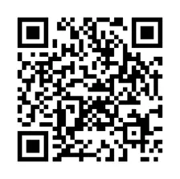

モータースポーツ倫理要項に基づく通報・相談窓口に関する細則
P.1モータースポーツ倫理要項に基づく通報・相談窓口に関する細則
（目的）
第１条 本細則は一般社団法人日本自動車連盟（以下「本連盟」という）の定める「モ
ータースポーツ倫理要項」（以下「本要項」という）に基づき設置した「通報・相談窓口」（以下「窓口」という）の運用の方法等について定める。
（被通報者）
第２条 本細則による通報の対象となる者（以下「被通報者」という）は本要項に定め
る対象者（「役職員・諮問機関委員等」）とする。
（通報・相談窓口）
第３条 窓口は本連盟モータースポーツ部内に設置する。通報に関する手段及び詳細
は本連盟のモータースポーツホームページで告知する。
（通報の対象行為）
第４条 通報の対象行為は本要項対象者のモータースポーツに関連する活動現場にお
ける本要項「２行動の基本原則」並びに「３具体的な遵守事項」に反する不適切行為（ハラスメント・暴力行為等）とする。
（通報者の責務）
第５条 通報者は窓口の利用にあたり、意図して個人に関する根拠のない誹謗中傷や
虚偽の事実を申し述べてはならない。
（本連盟の責務）
第６条 本連盟は法規範並びに本連盟の諸規程に基づき、誠実に対応するよう努めな
ければならない。
（通報の受付）
第７条 窓口は実名及び匿名のいずれの通報も受け付けるものとする。
２ 窓口は意図した個人に関する根拠のない誹謗中傷や虚偽の事実に基づく主張は受け付けない。３ 通報者は通報内容に係る事実について、被通報者の氏名、当該行為の被害者に関する情報、行為の事実その他関連の情報を明らかにし、通報事実が真実であると本連盟が信じるに足りる相当な証拠を示して行うよう努める。４ 本連盟は通報が匿名であっても、通報内容が真実であると本連盟が信じるに足り
P.2る相当な証拠が示される場合については調査の実施及び調査結果に基づく措置を講じることができる。
（通報内容の記録・保管）
第８条 本連盟は通報者の氏名（匿名の場合を除く）、連絡先、通報内容及び証拠等を
記録し一定期間保管するものとする。
（個人情報の保護及び不利益な取り扱いの禁止）
第９条 本連盟は当事者の個人情報を適切に保護しなければならず、通報者に不利益
な取り扱いを行ってはならない。
（通報に基づく調査）
第10 条 本連盟は通報された行為が本要項に反する疑いがある場合、調査を行うもの
とする。
２ 通報に基づく調査は公正かつ公平に行う。
３ 通報に基づく調査において、通報の対象となった者は公正な聴聞及び弁明の機会が与えられるものとする。４ 通報者及び被通報者は、通報に基づく調査に対して積極的に協力し、知り得た事実について忠実に真実を述べなければならない。
（調査の方法）
第11 条 本連盟は通報内容を直接調査し、その措置について審議、決定することがで
きる。
２ 調査は公正かつ公平に実施するものとし、当事者の個人情報の取り扱いは厳密に行うものとする。３ 第10 条第１項の定めにかかわらず、以下に該当する場合は調査等の措置を講じないものとする。
（１）通報者又は被害者が被通報者に対する措置を望まない場合
（２）通報者、被害者、被通報者又は対象行為に関する十分な情報が提供されないことにより事実関係の調査が困難と本連盟が判断した場合
（３）警察、自治体若しくはこれに付設された機関又は公認クラブ・団体等により既に対応済み又は調査中の事案の場合
（４）既に法的紛争となっている又は今後法的紛争となることが合理的に見込まれる場合
（５）上記のほか本連盟が調査を行うことが明らかに適切でないと認める場合
P.3（調査結果に基づく対応）
第12 条 本連盟は前条の調査の結果、ハラスメント・暴力行為等が明らかになった場
合には、当該行為者への再発防止措置等の適切かつ相当な措置を講ずるものとする。
２ 本連盟は前項の措置終了後、被通報者や当該調査に協力した者等の信用、名誉及びプライバシー等に配慮の上、通報者に対し、当該措置の内容を通知することができる。
３ 通報者が当該調査対象である不適切行為に関与していた場合、当事者である当該通報者が通報を行ったことを斟酌し、本連盟は当該通報者に対する措置を軽減することができる。
４ 本連盟は通報者及び被通報者や当該調査に協力した者等の秘密保持に十分に配慮しつつ、通報内容、調査の結果及び当該措置の内容等について公表することができる。
（窓口業務の委託）
第13 条 本連盟は本細則に基づく窓口の運用にかかる業務の全部または一部を第三者
に委託することができる。
（改廃）
第14 条 本細則の改正はモータースポーツ審査委員会がモータースポーツ審議会へ提
議し、答申に基づき会長が行う。
（施行期日）
第15 条 本細則は２０２４年９月１日から施行する。
【参考】第３条（通報・相談窓口）
Ｗｅｂフォームによる受付
https://cam.jaf.or.jp/s/03481318/o?pid=7032 上記URL の二次元コード
